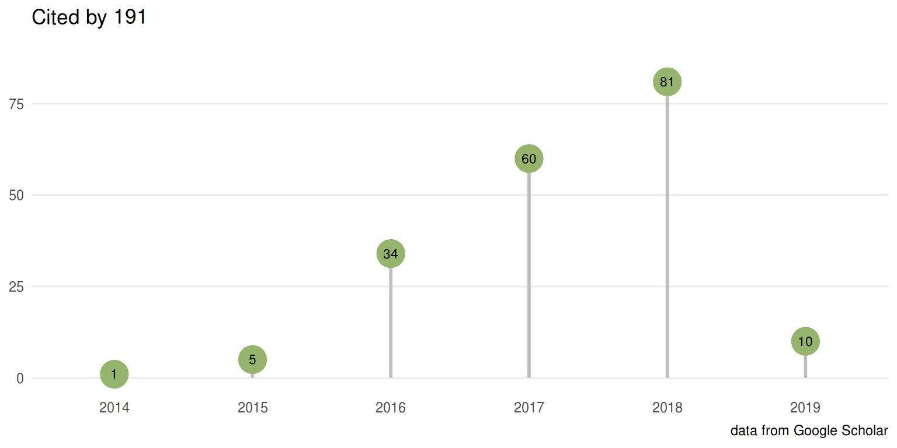

Featured Articles
Let us know if you have published using ChIPseeker and your publication will be featured here.

2018
Loss of ADAR1 in tumours overcomes resistance to immune checkpoint blockade. Nature. 2018
A CD4+ T cell population expanded in lupus blood provides B cell help through interleukin-10 and succinate. Nature Medicine. 2018
MIR sequences recruit zinc finger protein ZNF768 to expressed genes. Nucleic Acids Research. 2018
Interleukin 2 modulates thymic-derived regulatory T cell epigenetic landscape. Nature Communications. 2018, 9:5368.
Neuron-specific signatures in the chromosomal connectome associated with schizophrenia risk. Science. 2018, 362(6420):eaat4311.
Nervous System Regionalization Entails Axial Allocation before Neural Differentiation. Cell. 2018, 175(4):905-907.
The DNA binding landscape of the maize AUXIN RESPONSE FACTOR family. Nature Communications. 2018, 9:4526.
PWWP2A binds distinct chromatin moieties and interacts with an MTA1-specific core NuRD complex. Nature Communications. 2018, 9:4300.
MYC Interacts with the G9a Histone Methyltransferase to Drive Transcriptional Repression and Tumorigenesis. Cancer Cell. 2018, 34(4):579-595.
NF-κB inhibition rescues cardiac function by remodeling calcium genes in a Duchenne muscular dystrophy model. Nature Communications. 2018, 9:3431.
MCM2 promotes symmetric inheritance of modified histones during DNA replication. Science. 2018, 361(6409):1389-1392.
Polycomb-mediated gene silencing by the BAH–EMF1 complex in plants. Nature Genetics. 2018, 50:1254–1261.
Heterochromatin protects retinal pigment epithelium cells from oxidative damage by silencing p53 target genes. PNAS. 2018, 115(17):E3987-E3995.
HSV-1-induced disruption of transcription termination resembles a cellular stress response but selectively increases chromatin accessibility downstream of genes. PLoS pathogens. 2018, 14(3):e1006954.
Enhancer variants reveal a conserved transcription factor network governed by PU.1 during osteoclast differentiation. Bone Research. 2018, 6:8.
2017
Intergenic disease-associated regions are abundant in novel transcripts. Genome Biology. 2017, 18:241.
Promoter-bound METTL3 maintains myeloid leukaemia by m6A-dependent translation control. Nature. 2017.
Regeneration of the entire human epidermis using transgenic stem cells. Nature. 2017.
Global DNA methylation analysis reveals miR-214-3p contributes to cisplatin resistance in pediatric intracranial nongerminomatous malignant germ cell tumors. Neuro-Oncology. 2017.
Identification of the direct regulon of NtcA during early acclimation to nitrogen starvation in the cyanobacterium Synechocystis sp. PCC 6803. Nucleic Acids Research. 2017.
ZNF516 suppresses EGFR by targeting the CtBP/LSD1/CoREST complex to chromatin. Nature Communications. 2017, 8:691.
An NF-κB Transcription-Factor-Dependent Lineage-Specific Transcriptional Program Promotes Regulatory T Cell Identity and Function. Immunity. 2017, 47(3):450-465.
BRG1-SWI/SNF-dependent regulation of the Wt1 transcriptional landscape mediates epicardial activity during heart development and disease. Nature Communications. 2017, 8:16034.
Conserved roles of mouse DUX and human DUX4 in activating cleavage-stage genes and MERVL/HERVL retrotransposons. Nature Genetics. 2017, 49:925-934.
Lineage-specific functions of TET1 in the postimplantation mouse embryo. Nature Genetics. 2017, 49:1061-1072.
A cytosolic Ezh1 isoform modulates a PRC2–Ezh1 epigenetic adaptive response in postmitotic cells. Nature Structural & Molecular Biology. 2017, 24:444-452.
H2A monoubiquitination in Arabidopsis thaliana is generally independent of LHP1 and PRC2 activity. Genome Biology. 2017, 18:69
Human Nup98 regulates the localization and activity of DExH/D-box helicase DHX9. eLife. 2017, 6:e18825
Maintenance of macrophage transcriptional programs and intestinal homeostasis by epigenetic reader SP140. Science Immunology. 2017, 2(9):eaag3160
Identification of quiescent and spatially restricted mammary stem cells that are hormone responsive. Nature Cell Biology. 2017, 19:164–176
Combining ATAC-seq with nuclei sorting for discovery of cis-regulatory regions in plant genomes. Necleic Acids Research. 2017, 45(6):e41
2016
Dpy30 is critical for maintaining the identity and function of adult hematopoietic stem cells. The Journal of Experimental Medicine. 2016, 213(11):2349-2364
Satb2 determines miRNA expression and long-term memory in the adult central nervous system. eLife. 2016, 5:e17361
m6A modulates neuronal functions and sex determination in Drosophila. Nature. 2016, 540:242–247.
Regulation of transcriptional elongation in pluripotency and cell differentiation by the PHD-finger protein Phf5a. Nature Cell Biology. 2016, 18(11):1127–1138
Comprehensive genome and epigenome characterization of CHO cells in response to evolutionary pressures and over time. Biotechnology and Bioengineering. 2016, 113(10):2241-2253.
A comprehensive comparison of tools for differential ChIP-seq analysis. Briefings in Bioinformatics. 2016, 17(6): 953-966.
metagene Profiles Analyses Reveal Regulatory Element’s Factor-Specific Recruitment Patterns. PLoS Comput Biol. 2016, 12(8): e1004751.

Mouse MORC3 is a GHKL ATPase that localizes to H3K4me3 marked chromatin. PNAS Aug, 2016

TCGA Workflow: Analyze cancer genomics and epigenomics data using Bioconductor packages. F1000Research. 2016, 5:1542.

Cistrome-based Cooperation between Airway Epithelial Glucocorticoid Receptor and NF-κB Orchestrates Anti-inflammatory Effects. The Journal of Biological Chemistry 2016, 291:12673-12687.
Obesity and Bariatric Surgery Drive Epigenetic Variation of Spermatozoa in Humans. Cell Metabolism 2016, 23(2):369-378.
ReactomePA: an R/Bioconductor package for reactome pathway analysis and visualization. Molecular BioSystems. 2016, 12(2):477-479.
2015
Elf5-centered transcription factor hub controls trophoblast stem cell self-renewal and differentiation through stoichiometry-sensitive shifts in target gene networks. Genes & Development 2015, 29:2435-2448.
Response Element Composition Governs Correlations between Binding Site Affinity and Transcription in Glucocorticoid Receptor Feed-forward Loops. The Journal of Biological Chemistry 2015, 290:19756-19769.
Common binding by redundant group B Sox proteins is evolutionarily conserved in Drosophila. BMC Genomics 2015, 16:292.